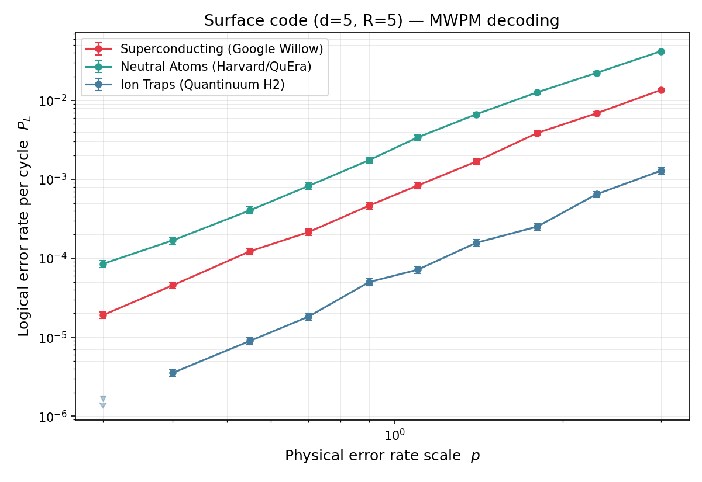
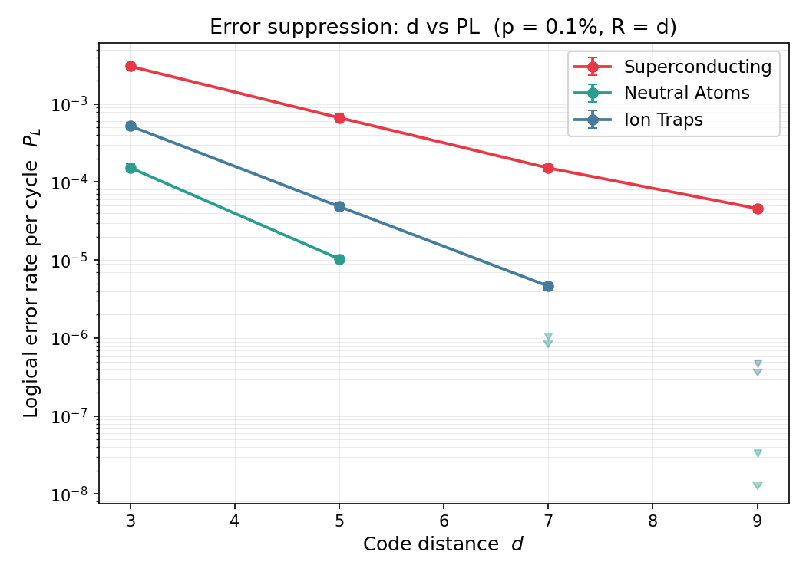
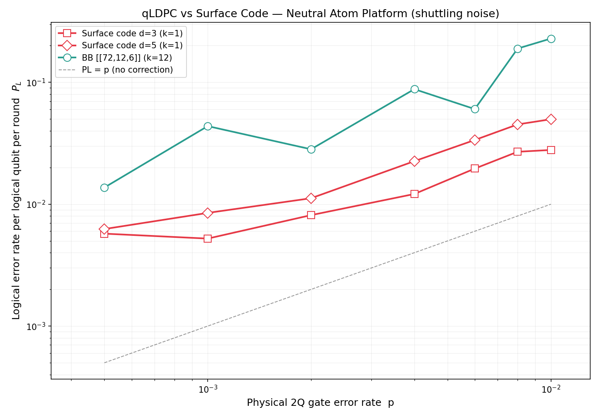

Research Overview: Key Questions & Benchmarking Framework
Q Why perform cross-platform benchmarking?
A single physical gate fidelity cannot tell whether a platform is suited for QEC. We instead ask one unified question: to realize one reliable logical qubit, how many physical qubits, how many syndrome rounds, and what final per-round logical error rate $P_L$ does each platform need?
Q Why use the Surface Code as the baseline?
It requires only local stabilizer measurements, making it compatible with most current 2D hardware, and it is the most widely used baseline in fault-tolerant computing — a "common language" for comparing very different platforms.
Q How are comparison metrics determined?
Not by bare gate noise ($p_{2Q}$) alone. In a full syndrome cycle, measurement, reset, idle waiting, atom shuttling, and ion transport all turn into effective noise through their time cost, feeding an effective budget $p_{\mathrm{eff}}$ that also depends on $T_1, T_2$.
Q How will we perform the benchmarks?
Two circuit models. The Builtin Model uses Stim's rotated surface-code memory with aggregate noise, ideal for threshold-theorem baselines. The Platform-Aware Compiler builds gate-by-gate sequences and derives idle noise from $T_1/T_2$ and real schedule times.
Introduction to Surface Code & Syndrome Extraction Interactive Grid Demonstration
Rotated Surface Code (Distance $d=3$)
$d^2$ data qubits encode one logical qubit; $d^2-1$ measurement ancillas read out local checks, giving $N_{\mathrm{phys}}=2d^2-1$ ($17$ for $d=3$). Bulk checks touch four data qubits; boundary checks touch two.
- X-Stabilizers (orange) detect physical Z errors.
- Z-Stabilizers (cyan) detect physical X errors.
Per-round logical error rate
From an $R$-round run with failure $P_{\mathrm{run}}$, invert the binary-flip model $P_{\mathrm{run}}=\tfrac{1}{2}[1-(1-2P_L)^R]$:
Try it: click a data qubit to toggle a Z / X error and watch stabilizers fire. Decoder: MWPM (surface) / BP+OSD (qLDPC).
QEC Cycle & Abstract Noise Modeling Interactive Parameter Pipeline
Superconducting Transmon Platform & Weak Anharmonicity
Harmonic spectrum, degenerate transition energies: $\omega_{01} = \omega_{12}$.
Introduces non-linearity acting as a non-linear inductor: $L_J(\phi)$.
Anharmonicity ratio $\alpha \approx -E_C$ isolates computational space $|0\rangle, |1\rangle$.
2D physical qubit grids coupled via CPW or tunable resonators.
Platform Strengths
- Low, Fast Gates: $p_{1Q}=3\times10^{-4}$, $p_{2Q}=10^{-3}$ via mature nanosecond microwave control.
- Native 2D Layout: Planar transmon arrays naturally match the surface-code nearest-neighbor grid.
Platform Weaknesses & Bottlenecks
- Short Coherence: $T_1=T_2\approx 100\,\mu\text{s}$ — any wait or readout quickly turns into dephasing.
- Readout & Idle: $p_{\mathrm{meas}}=5\times10^{-3}$; each round splits into 4 directional CZ layers, exposing idle qubits and the measurement phase to decay.
Neutral-Atom Reconfigurable Tweezer Platform & Rydberg Interaction
Interactive vector model mapping physical 2D shuttling transport step-by-step.
Rydberg Blockade Hamiltonian and Gate Condition
Shuttling Time Budget ($B=4$ batches):
$t_{\mathrm{round}} \approx 2B\,t_{\mathrm{move}} + B\,t_{\mathrm{gate}} = 8(200\mu\text{s}) + 4t_{\mathrm{gate}} \approx 1.6\,\mathrm{ms}$
Since $t_{\mathrm{move}}\!\approx\!200\mu\text{s} \gg t_{\mathrm{gate}}\!\approx\!100\text{ns}$, move-idle alone ($1.6\,$ms) rivals $T_2=1\,$ms. The real bottleneck is storage-zone dephasing during shuttling, not the Rydberg gate. Working point: $p_{1Q}\!=\!10^{-3},\,p_{2Q}\!=\!6\!\times\!10^{-3},\,p_{\mathrm{meas}}\!=\!5\!\times\!10^{-3}$.
Platform Strengths
- Long Coherence: $T_1 \sim 1\text{s}$, $T_2 \sim 1\text{ms}$ in quiescent storage zones.
- Geometric Flexibility: Reconfigurable atom positions support scalable qLDPC networks.
Platform Bottlenecks
- Movement-Induced Idle: Continuous shuttling causes high cumulative idle dephasing.
- Leakage & Loss: Spontaneous Rydberg state decay leads to atom escape and loss.
Trapped-Ion QCCD Platform & Collective-Motion Bus
Interactive QCCD schematic mapping ion shuttling, collective-motion gates, and state-dependent fluorescence readout.
Mølmer–Sørensen Collective-Motion Interaction
QCCD Transport & Readout Overhead:
$p_{\mathrm{idle}} \approx \tfrac{1}{2}\big(1-e^{-t_{\mathrm{cycle}}/T_2}\big)$
Even with $T_1,T_2\!>\!10\,$s, every ancilla-data pair needs transport–gate–transport plus slow readout. The long cycle and measurement crosstalk still leave a $\sim\!10^{-3}$ idle floor. Working point: $p_{1Q}\!=\!10^{-4},\,p_{2Q}\!=\!10^{-3},\,p_{\mathrm{meas}}\!=\!6\!\times\!10^{-3}$.
Platform Strengths
- Unmatched Gate Fidelity: $p_{1Q} \le 10^{-4}$, $p_{2Q} \le 10^{-3}$, leading current physical benchmarks.
- Ultra-Long Coherence: $T_1, T_2 \ge 10\text{s}$, highly robust against basic memory loss.
Platform Bottlenecks
- Slow Cycle Dynamics: Shuttling physical structures scales poorly; readout crosstalk is severe.
- Transport Heating: Repeated transport excites stray vibrational phonons, requiring laser cooling.
Dual-Track Simulation & Experimental Design
Calls Stim's generated("surface_code:rotated_memory_z"), then injects four aggregate channels: Clifford depolarization, per-round data idle, pre-measurement bit-flip, and post-reset bit-flip. Ideal for threshold behavior; carries no platform timing.
Builds the circuit gate-by-gate: reset, four interaction directions, measurement, and detectors. A $T_1/T_2$ idle channel is applied at every real waiting phase, exposing each platform's true time overhead.
Circuit-Level Modeling: Builtin vs. Compiler Structural Comparison & Noise Dynamics
Idealized circuits where gate scheduling details are omitted. A lumped, uniform, distance-independent p_idle is applied to every data qubit at the end of each round.
Gates are compiled sequentially step-by-step. Real-time dephasing is modeled by integrating active gate, measurement, and shuttling durations with $T_1/T_2$ decay.
Experiment 1: Logical vs. Physical Noise Scaling

Core Scientific Insight
Experiment 2: Suppression vs. Code Distance

The Incompressible Decohere Floor
Experiment 3: Natural Working Point & Target Distances
| Platform | Builtin PL (d=9) | Compiler PL (d=9) | Req. Distance for $10^{-6}$ |
|---|---|---|---|
| Superconducting | 3.91e-5 | 2.56e-3 | d=15 (Builtin) | d > 19 (Compiler) |
| Neutral Atom | 6.37e-4 | 2.76e-2 | d=7 (Builtin) | d > 19 (Compiler) |
| Trapped Ion | 5.56e-7 | 3.16e-3 | d=9 (Builtin) | d > 19 (Compiler) |
The $P_L = 10^{-6}$ Feasibility Abyss
Under the Builtin Model, the target-distance search is optimistic: trapped ions reach $P_L=10^{-6}$ near $d=9$, neutral atoms near $d=7$ in the reported target sweep, and superconducting qubits near $d=15$. The lesson is not that one single hardware number wins; the aggregate error budget and fitted distance scaling set the code size.
Under the Compiler Model, none of the three reaches $10^{-6}$ even at $d=19$. This is not decoder failure but a timing wall: idle error accumulates as ${\sim}(2d^2-1)\,p_{\text{idle}}$, so enlarging the code feeds back nearly as much waiting-induced noise as it removes. The gap between the two columns is exactly the cost the abstract model omits.
Experiment 4: Neutral-Atom qLDPC vs. Surface Code Architectural Code Family Challenge

Tanner Graph & Shuttling Penalty
BB qLDPC $[[72,12,6]]$ has a high encoding rate: 144 physical qubits (72 data + 72 ancilla) carry $k=12$ logical qubits — an $\approx 8.3\%$ density versus $\approx 2.0\%$ for a $d{=}5$ surface code. The price is a non-local Tanner graph whose stabilizer checks are not geometrically local.
On the dual-zone atom array this demands 8 move batches/round instead of 4. In the experiment table this doubles the counted move-idle exposure from $0.8\,$ms to $1.6\,$ms; equivalently, when out-and-back motion is counted per gate batch, the full surface-code round already reaches the millisecond scale. Since this is comparable to $T_2=1\,$ms, shuttling-induced dephasing dominates both codes.
Decoder: the qLDPC uses BP+OSD (OSD-0), since its circuit-level DEM contains hyperedges (one fault can flip more than two detectors) that ordinary MWPM cannot handle; the surface code uses MWPM.
* Only 50 shots/point (BP+OSD is slow), so qLDPC error bars are large — read trends, not exact values. Above threshold, Surface $d{=}5$ also exceeds $d{=}3$ in $P_L$, as 49 physical qubits accrue more idle noise than 17.
Summary, Limitations, & Next Milestone Steps
1. One Language, Two Models
The surface code is a unified benchmark across all three platforms — but comparison demands separating the abstract noise model from the platform timing model. Builtin confirms sub-threshold exponential suppression; the compiler exposes an idle-noise floor from real scheduling.
2. Timing Dominates, Not Gates
In platform-aware models, $P_L$ is set by decoherence from waiting, measurement, movement and transport — not the two-qubit gate error itself. Neutral atoms are the extreme: shuttling time rivals $T_2$, pushing $P_L$ far above the builtin expectation.
3. Distance ≠ Guaranteed Suppression
Increasing $d$ need not lower $P_L$. When idle exposure grows as ${\sim}d^2$ with the qubit count, the correction gain is cancelled — seen in both the surface-code compiler runs and the qLDPC comparison.
4. qLDPC: Rate vs. Connectivity
High encoding rate is a real asset, but must be weighed against connectivity and scheduling cost. On the dual-zone atom model, BB qLDPC's non-local checks need more move batches, so its per-logical $P_L$ exceeds the surface code — yet $k=12$ may still pay off at large scale.
Next Steps & Future Directions
- Sensitivity sweep: Scan $T_2$, measurement, movement and transport times to pin down the hardware metrics each platform needs to reach $P_L = 10^{-6}$.
- Compiler scheduling & layout: Optimize platform-aware scheduling and layout — especially neutral-atom qLDPC qubit placement and batching — to cut idle exposure.
- qLDPC statistics & decoders: Raise shot counts and upgrade from OSD-0 to stronger OSD-CS or windowed decoding, separating the physical shuttling penalty from low-order decoder loss.